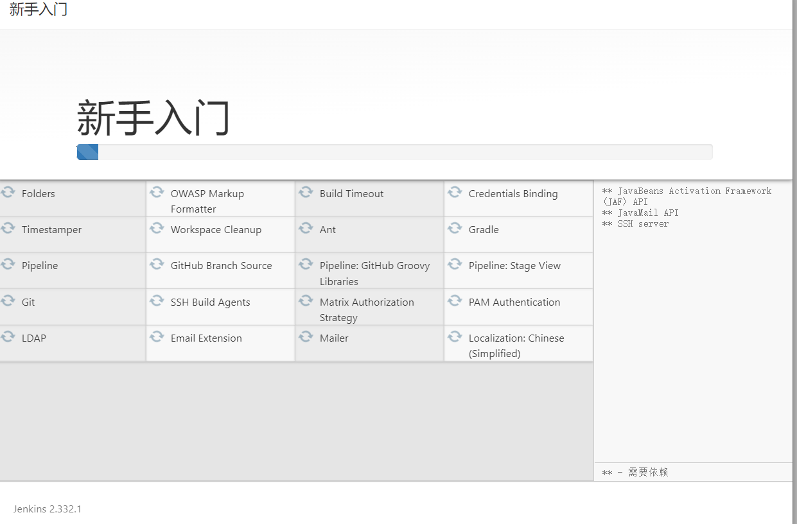

DevOps实战：使用GitLab+Jenkins+Kubernetes(k8s)建立CI/CD解决方案
一.系统环境
本文主要基于Kubernetes1.21.9和Linux操作系统CentOS7.4。
| 服务器版本 | docker软件版本 | Kubernetes(k8s)集群版本 | CPU架构 |
|---|---|---|---|
| CentOS Linux release 7.4.1708 (Core) | Docker version 20.10.12 | v1.21.9 | x86_64 |
CI/CD解决方案架构图：
CI/CD解决方案架构图描述：
程序员写好代码之后，向gitlab代码仓库提交代码，gitlab检测到变化之后，触发CI/CD服务器Jenkins，CI/CD服务器
Jenkins构建镜像，镜像构建好之后推送到registry镜像仓库，最后使用新的镜像在Kubernetes(k8s)环境部署。
CI/CD解决方案架构：k8scloude1作为Kubernetes(k8s)的master节点，k8scloude2，k8scloude3作为Kubernetes(k8s)的worker节点，由于机器有限，etcd1作为CI/CD服务器，镜像仓库，代码仓库。
| 服务器 | 操作系统版本 | CPU架构 | 进程 | 功能描述 |
|---|---|---|---|---|
| etcd1/192.168.110.133 | CentOS Linux release 7.4.1708 (Core) | x86_64 | docker，jenkins | CI/CD服务器 |
| etcd1/192.168.110.133 | CentOS Linux release 7.4.1708 (Core) | x86_64 | registry | 镜像仓库 |
| etcd1/192.168.110.133 | CentOS Linux release 7.4.1708 (Core) | x86_64 | gitlab，Git | 代码仓库 |
| k8scloude1/192.168.110.130 | CentOS Linux release 7.4.1708 (Core) | x86_64 | docker，kube-apiserver，etcd，kube-scheduler，kube-controller-manager，kubelet，kube-proxy，coredns，calico | k8s master节点 |
| k8scloude2/192.168.110.129 | CentOS Linux release 7.4.1708 (Core) | x86_64 | docker，kubelet，kube-proxy，calico | k8s worker节点 |
| k8scloude3/192.168.110.128 | CentOS Linux release 7.4.1708 (Core) | x86_64 | docker，kubelet，kube-proxy，calico | k8s worker节点 |
二.前言
DevOps是一种将开发（Development）和运维（Operations）相结合的软件开发方法论。它通过自动化和持续交付的方式，将软件开发、测试和部署等环节紧密集成，以提高效率和产品质量。在本篇博客中，我们将介绍如何使用GitLab、Jenkins和Kubernetes(k8s)来构建一个完整的CI/CD解决方案。
使用GitLab、Jenkins和Kubernetes(k8s)来构建CI/CD解决方案的前提是已经有一套可以正常运行的Kubernetes集群，关于Kubernetes(k8s)集群的安装部署，可以查看博客《Centos7 安装部署Kubernetes(k8s)集群》https://www.cnblogs.com/renshengdezheli/p/16686769.html。
三.DevOps简介
DevOps通过打破开发和运维之间的壁垒，促进了更紧密的合作和快速响应变化的能力。它强调团队间的协作、自动化和持续改进。通过引入DevOps实践，组织可以更快地交付软件，并确保高质量的发布。
四.CI/CD简介
CI/CD代表持续集成（Continuous Integration）和持续交付（Continuous Delivery）。持续集成是指团队成员将其工作频繁地集成到共享存储库中，并进行自动化构建和测试，以减少集成问题。持续交付是指将应用程序更频繁地交付给用户，以便快速获得反馈并提供新功能。本次使用的CI/CD工具为Jenkins。
五.安装并配置docker参数
etcd1机器作为集成服务器，需要下载大量镜像，所以首先需要安装docker，docker版本标识：社区版 docker-ce 和企业版 docker-ee。
[root@etcd1 ~]# yum -y install docker-ce
为了让镜像下载速度变快，需要配置镜像加速器，关于docker更多详细内容，请查看博客《一文搞懂docker容器基础：docker镜像管理，docker容器管理》。
[root@etcd1 ~]# vim /etc/docker/daemon.json
[root@etcd1 ~]# cat /etc/docker/daemon.json
{
"registry-mirrors": ["https://frz7i079.mirror.aliyuncs.com"]
}
重启docker使配置生效。
[root@etcd1 ~]# systemctl restart docker
[root@etcd1 ~]# systemctl status docker
● docker.service - Docker Application Container Engine
Loaded: loaded (/usr/lib/systemd/system/docker.service; disabled; vendor preset: disabled)
Active: active (running) since 六 2022-03-26 17:53:49 CST; 40s ago
Docs: https://docs.docker.com
Main PID: 1495 (dockerd)
Memory: 32.9M
CGroup: /system.slice/docker.service
└─1495 /usr/bin/dockerd -H fd:// --containerd=/run/containerd/containerd.sock
设置docker开机自启动
[root@etcd1 ~]# systemctl enable docker
Created symlink from /etc/systemd/system/multi-user.target.wants/docker.service to /usr/lib/systemd/system/docker.service.
修改docker启动脚本，--insecure-registry=192.168.110.133:5000是镜像仓库的地址， 我们使用registry搭建镜像仓库，添加了--insecure-registry=192.168.110.133:5000参数之后，就可以使用http的方式拉取镜像，不然默认使用https的方式拉取镜像。
jenkins需要做的工作：构建，编译，推送，这些操作都需要借助docker去完成，但是jenkins自身是没有docker命令的，要让jenkins连接到物理机的docker上，需要添加参数：-H tcp://0.0.0.0:2376。
[root@etcd1 ~]# vim /usr/lib/systemd/system/docker.service
[root@etcd1 ~]# cat /usr/lib/systemd/system/docker.service
.....
ExecStart=/usr/bin/dockerd --insecure-registry=192.168.110.133:5000 -H tcp://0.0.0.0:2376 -H fd:// --containerd=/run/containerd/containerd.sock
.....
重新加载配置文件，重启docker。
[root@etcd1 ~]# systemctl daemon-reload ;systemctl restart docker
查看状态可以发现：8083 /usr/bin/dockerd --insecure-registry=192.168.110.133:5000 -H tcp://0.0.0.0:2376 -H fd:// --containerd=/run/containerd/containerd.sock，修改参数成功。
[root@etcd1 ~]# systemctl status docker
● docker.service - Docker Application Container Engine
Loaded: loaded (/usr/lib/systemd/system/docker.service; enabled; vendor preset: disabled)
Active: active (running) since 二 2022-03-29 11:37:51 CST; 20s ago
Docs: https://docs.docker.com
Main PID: 8083 (dockerd)
Memory: 36.8M
CGroup: /system.slice/docker.service
└─8083 /usr/bin/dockerd --insecure-registry=192.168.110.133:5000 -H tcp://0.0.0.0:2376 -H fd:// --containerd=/run/containerd/containerd.sock
我们把镜像推送到registry镜像仓库之后，k8s集群的worker节点会向registry镜像仓库拉取镜像，默认使用https的方式从镜像仓库拉取镜像，需要在k8s的worker节点修改docker启动参数，添加--insecure-registry=192.168.110.133:5000，让其使用http的方式从registry镜像仓库拉取镜像。
[root@k8scloude2 ~]# vim /usr/lib/systemd/system/docker.service
[root@k8scloude2 ~]# cat /usr/lib/systemd/system/docker.service
......
ExecStart=/usr/bin/dockerd --insecure-registry=192.168.110.133:5000 -H fd:// --containerd=/run/containerd/containerd.sock
......
[root@k8scloude2 ~]# grep ExecStart /usr/lib/systemd/system/docker.service
ExecStart=/usr/bin/dockerd --insecure-registry=192.168.110.133:5000 -H fd:// --containerd=/run/containerd/containerd.sock
重新加载配置文件，重启docker。
[root@k8scloude2 ~]# systemctl daemon-reload ;systemctl restart docker
[root@k8scloude2 ~]# systemctl status docker
● docker.service - Docker Application Container Engine
Loaded: loaded (/usr/lib/systemd/system/docker.service; enabled; vendor preset: disabled)
Active: active (running) since 二 2022-03-29 11:51:36 CST; 4s ago
Docs: https://docs.docker.com
Main PID: 57510 (dockerd)
Memory: 63.6M
CGroup: /system.slice/docker.service
├─57510 /usr/bin/dockerd --insecure-registry=192.168.110.133:5000 -H fd:// --containerd=/run/containerd/containerd.sock
├─57759 /usr/bin/docker-proxy -proto tcp -host-ip 0.0.0.0 -host-port 80 -container-ip 172.17.0.2 -container-port 80
└─57767 /usr/bin/docker-proxy -proto tcp -host-ip :: -host-port 80 -container-ip 172.17.0.2 -container-port 80
k8scloude3节点也需要修改docker启动参数，添加--insecure-registry=192.168.110.133:5000，让其使用http的方式从registry镜像仓库拉取镜像。
[root@k8scloude3 ~]# vim /usr/lib/systemd/system/docker.service
[root@k8scloude3 ~]# grep ExecStart /usr/lib/systemd/system/docker.service
ExecStart=/usr/bin/dockerd --insecure-registry=192.168.110.133:5000 -H fd:// --containerd=/run/containerd/containerd.sock
重新加载配置文件，重启docker。
[root@k8scloude3 ~]# systemctl daemon-reload ;systemctl restart docker
[root@k8scloude3 ~]# systemctl status docker
● docker.service - Docker Application Container Engine
Loaded: loaded (/usr/lib/systemd/system/docker.service; enabled; vendor preset: disabled)
Active: active (running) since 二 2022-03-29 15:55:13 CST; 5s ago
Docs: https://docs.docker.com
Main PID: 9099 (dockerd)
Memory: 43.1M
CGroup: /system.slice/docker.service
└─9099 /usr/bin/dockerd --insecure-registry=192.168.110.133:5000 -H fd:// --containerd=/run/containerd/containerd.sock
现在k8s集群的所有worker节点都加上了--insecure-registry=192.168.110.133:5000参数。
在etcd1机器拉取nginx镜像，之后做web容器的时候会用到。
[root@etcd1 ~]# docker pull nginx
Using default tag: latest
......
Status: Downloaded newer image for nginx:latest
docker.io/library/nginx:latest
[root@etcd1 ~]# docker images | grep nginx
nginx latest 605c77e624dd 3 months ago 141MB
六.使用registry搭建镜像仓库
本次使用registry搭建镜像仓库，也可以使用harbor搭建镜像仓库，功能更丰富，关于harbor的详细内容，请查看博客《搭建docker镜像仓库(二)：使用harbor搭建本地镜像仓库》。
拉取registry镜像
[root@etcd1 ~]# docker pull hub.c.163.com/library/registry:latest
[root@etcd1 ~]# docker images | grep registry
hub.c.163.com/library/registry latest 751f286bc25e 4 years ago 33.2MB
注意：registry的数据卷为：VOLUME [/var/lib/registry]，不能是其他的。
创建registry容器，registry镜像生成容器作为私有仓库，-p 5000:5000做端口映射，物理机端口5000:容器端口5000，
-v /myregistry:/var/lib/registry数据卷挂载，物理机目录/myregistry:容器目录/var/lib/registry。
[root@etcd1 ~]# docker run -d --name registry -p 5000:5000 --restart=always -v /myregistry:/var/lib/registry hub.c.163.com/library/registry
3aa799d1974611fc403ce38aa19a156cb165a82573b84b16fde665d9e3b62eb0
现在registry镜像仓库就搭建好了。
[root@etcd1 ~]# docker ps | grep registry
3aa799d19746 hub.c.163.com/library/registry "/entrypoint.sh /etc…" 8 seconds ago Up 7 seconds 0.0.0.0:5000->5000/tcp, :::5000->5000/tcp registry
此时镜像仓库下还没有任何文件
[root@etcd1 ~]# ls /myregistry/
七.安装部署gitlab代码仓库
7.1 创建gitlab容器
在etcd1机器下载gitlab中文版镜像
[root@etcd1 ~]# docker pull beginor/gitlab-ce
[root@etcd1 ~]# docker images | grep gitlab
beginor/gitlab-ce latest 5595d4ff803e 3 years ago 1.5GB
创建gitlab配置文件目录，日志目录，代码目录
[root@etcd1 ~]# mkdir -p /data/gitlab/etc /data/gitlab/log /data/gitlab/data
给gitlab配置文件目录，日志目录，代码目录授予777权限
[root@etcd1 ~]# chmod 777 /data/gitlab/etc /data/gitlab/log /data/gitlab/data
创建gitlab容器，使用--privileged=true参数，使container内的root拥有真正的root权限。否则，container内的root只是外部的一个普通用户权限。--privileged=true启动的容器，可以看到很多host上的设备，并且可以执行mount。甚至允许你在docker容器中启动docker容器。
-v指定数据卷，gitlab容器的配置文件，日志文件，数据文件也都存储到了物理机上，我们修改对应数据卷的内容，gitlab容器的相关内容也随之改变。-p指定端口映射。
[root@etcd1 ~]# docker run -dit --name=gitlab --restart=always -p 8443:443 -p 80:80 -p 222:22 -v /data/gitlab/etc:/etc/gitlab -v /data/gitlab/log:/var/log/gitlab -v /data/gitlab/data:/var/opt/gitlab --privileged=true beginor/gitlab-ce
查看gitlab容器
[root@etcd1 ~]# docker ps | grep gitlab
d23f2df47e42 beginor/gitlab-ce "/assets/wrapper" 22 hours ago Up 6 hours (healthy) 0.0.0.0:80->80/tcp, :::80->80/tcp, 0.0.0.0:222->22/tcp, :::222->22/tcp, 0.0.0.0:8443->443/tcp, :::8443->443/tcp gitlab
现在gitlab配置文件目录，日志目录，代码目录都有相关文件了。
[root@etcd1 ~]# ls /data/gitlab/etc/
gitlab.rb gitlab-secrets.json ssh_host_ecdsa_key ssh_host_ecdsa_key.pub ssh_host_ed25519_key ssh_host_ed25519_key.pub ssh_host_rsa_key ssh_host_rsa_key.pub trusted-certs
[root@etcd1 ~]# ls /data/gitlab/log/
gitaly gitlab-monitor gitlab-rails gitlab-shell gitlab-workhorse logrotate nginx node-exporter postgres-exporter postgresql prometheus reconfigure redis redis-exporter sidekiq sshd unicorn
[root@etcd1 ~]# ls /data/gitlab/data/
backups gitaly gitlab-ci gitlab-rails gitlab-workhorse nginx postgres-exporter prometheus redis
bootstrapped git-data gitlab-monitor gitlab-shell logrotate node-exporter postgresql public_attributes.json trusted-certs-directory-hash
7.2 修改gitlab容器配置文件
注意先让gitlab容器运行一段时间，让其数据进行初始化，然后再停止gitlab容器，修改配置文件。
[root@etcd1 ~]# docker stop gitlab
下面开始修改gitlab的配置文件。
修改/data/gitlab/etc/gitlab.rb，external_url指的是gitlab所在的机器IP，gitlab_ssh_host指定gitlab所在的机器IP，gitlab_shell_ssh_port指定ssh端口，因为我们把gitlab容器的22端口映射为了222，所以gitlab_shell_ssh_port为222。
[root@etcd1 ~]# vim /data/gitlab/etc/gitlab.rb
[root@etcd1 ~]# cat /data/gitlab/etc/gitlab.rb | egrep -v "^#" | egrep "external_url|gitlab_ssh_host|ssh_port"
external_url 'http://192.168.110.133'
gitlab_rails['gitlab_ssh_host'] = '192.168.110.133'
gitlab_rails['gitlab_shell_ssh_port'] = 222
修改/data/gitlab/data/gitlab-rails/etc/gitlab.yml，host指定gitlab所在的机器IP，端口为80，不使用https。
[root@etcd1 ~]# vim /data/gitlab/data/gitlab-rails/etc/gitlab.yml
[root@etcd1 ~]# grep -A6 192.168.110.133 /data/gitlab/data/gitlab-rails/etc/gitlab.yml
host: 192.168.110.133
port: 80
https: false
启动gitlab容器。
[root@etcd1 ~]# docker start gitlab
查看gitlab容器。
[root@etcd1 ~]# docker ps | grep gitlab
d23f2df47e42 beginor/gitlab-ce "/assets/wrapper" 22 hours ago Up 6 hours (healthy) 0.0.0.0:80->80/tcp, :::80->80/tcp, 0.0.0.0:222->22/tcp, :::222->22/tcp, 0.0.0.0:8443->443/tcp, :::8443->443/tcp gitlab
7.3 访问gitlab web界面
浏览器访问gitlab所在机器的IP地址和80端口，即可访问gitlab web界面 。
访问gitlab界面http://192.168.110.133/，gitlab登录界面如下。

点击修改密码，注意密码如果太简单会报错。
设置账号密码：账号为root，密码为：mycoderepo123。
输入账号root，密码：mycoderepo123登录gitlab界面。
登录gitlab之后，首页如下。
可以看到gitlab版本为：GitLab 社区版 10.7.5。
7.4 创建项目
点击创建一个项目。
设置项目名称为：my-project，项目描述（可选），可见等级设置为公开，点击创建项目。
选择SSH的方式拉取和推送代码，点击新建SSH公钥，否则无法通过SSH拉取和推送代码。
需要粘贴SSH的公钥，现在去代码上传的机器上拿密钥。
现在回到etcd1机器，创建SSH密钥，复制公钥信息到Gitlab的密钥里。
现在还没有SSH密钥。
[root@etcd1 ~]# ls ~/.ssh/
known_hosts
生成密钥，-N ""表示提供一个新密语，密语为空。
[root@etcd1 ~]# ssh-keygen -N ""
查看生成的密钥，id_rsa是私钥 ，id_rsa.pub是公钥。
[root@etcd1 ~]# ls ~/.ssh/
id_rsa id_rsa.pub known_hosts
查看公钥，并复制公钥信息到Gitlab的密钥里。
[root@etcd1 ~]# cat ~/.ssh/id_rsa.pub
ssh-rsa AAAAB3NzaC1yc2EAAAADAQABAAABAQDDGO+hg4j5pkEN/VrD/OOHFkEWvpyAYSmLnCL35MHnqSSshJA29ZPmBNByIMSTnhHU9j2oQ6RSh8YIgULnf8T7aQ+/ByTojhenbXjI7l47NkmWDVLE89rHY+fxWIy21sXrQLUNivbxfV+drQ47Kts4+PkeXxPpfFCjqPlk5VMQdSQGe9IvFUFKb46ctyzClUlXp1dGQbLHZaeZ/KzpCavRxvXRUECO8dCItoI1jFtLFy/+1uyXDLNe/38nwJuwa6J/KWAYB7gRwrRITvdOn+4L+iJFK5MPI6evdN6ZzGUTGkr3BgufrDpV3Tk0CMdAfNDvOfu2sg7mey4OiT+zvLn9 root@etcd1
复制公钥信息到Gitlab的密钥里，点击添加密钥。
添加密钥之后如下。
7.5 创建Git版本库
点击项目--->您的项目。
找到我们的项目，点击进入。
根据命令行指令创建Git版本库。
安装Git
[root@etcd1 ~]# yum -y install git
--global表示Git 全局设置，设置用户名和邮箱。
[root@etcd1 ~]# git config --global user.name "Administrator"
[root@etcd1 ~]# git config --global user.email "lizedemail@foxmail.com"
把我们gitlab上的项目克隆下来。
[root@etcd1 ~]# git clone ssh://git@192.168.110.133:222/root/my-project.git
[root@etcd1 ~]# ls my-project/
index.html
修改index.html首页文件。
[root@etcd1 ~]# cd my-project/
[root@etcd1 my-project]# vim index.html
[root@etcd1 my-project]# cat index.html
hello gitlab
在Git 1.0 中，git push 默认会把你本地的所有分支都上传到远程， push.default 的值是‘matching’，如果想始终保持以往的习惯就执行
git config --global push.default matching。
到了git 2.0，git push默认是把当前分支上传到远程而不是所有本地分支，push.default 的值是‘simple’，这样比较保守也推荐这样，git config --global push.default simple。
[root@etcd1 my-project]# git config --global push.default matching
[root@etcd1 my-project]# git config --global push.default simple
git add 命令可将该文件添加到暂存区。
[root@etcd1 my-project]# git add index.html
添加注释
[root@etcd1 my-project]# git commit -m "add index.html"
git push命令用于将本地分支的更新，推送到远程主机。
[root@etcd1 my-project]# git push
去gitlab界面上看文件是否推送过去，可以看到index.html被推送到gitlab代码仓库了。
自此gitlab代码仓库配置完成，但是还缺触发jenkins，等安装好jenkins再配置。
八.安装部署CI/CD服务器jenkins
8.1 创建jenkins容器
拉取网易的jenkins镜像。
[root@etcd1 my-project]# docker pull hub.c.163.com/library/jenkins:latest
下载基于centos的jenkins镜像。
[root@etcd1 my-project]# docker pull jenkins/jenkins:2.332.1-lts-centos7
[root@etcd1 my-project]# docker images | grep jenkins
jenkins/jenkins 2.332.1-lts-centos7 0dfc0feff986 2 weeks ago 503MB
hub.c.163.com/library/jenkins latest 88d9d8a30b47 4 years ago 810MB
创建jenkins数据卷所需要的目录，并把所有者和所属组改为1000。
[root@etcd1 my-project]# mkdir /jenkins ; chown 1000:1000 /jenkins
[root@etcd1 my-project]# ll -d /jenkins/
drwxr-xr-x 12 tom tom 4096 3月 30 15:59 /jenkins/
/jenkins的属主UID要改成1000的原因为：容器里是以jenkins用户的身份去读写数据，而在容器里 jenkins 的 uid 是 1000，可以看下此镜像的 Dockerfile 内容。
通过jenkins镜像的Dockerfile可以发现，用户UID和用户组GID为1000，HTTP端口为8080，代理端口为50000。
创建jenkins容器。
- -dit: 在后台以交互模式运行容器，并分配一个伪终端。
- -p 8080:8080: 将主机的8080端口映射到容器的8080端口，允许通过主机的8080端口访问Jenkins的Web界面。
- -p 50000:50000: 将主机的50000端口映射到容器的50000端口，用于Jenkins的代理节点通信。
- --name jenkins: 指定容器的名称为"jenkins"。
- --privileged=true: 启用特权模式，允许容器内部的进程拥有更高级别的权限。
- --restart=always: 定义容器在退出或重启之后应该自动重新启动。
- -v /jenkins:/var/jenkins_home: 将主机上的"/jenkins"目录挂载到容器内部的"/var/jenkins_home"目录，用于持久化Jenkins数据。
[root@etcd1 my-project]# docker run -dit -p 8080:8080 -p 50000:50000 --name jenkins --privileged=true --restart=always -v /jenkins:/var/jenkins_home jenkins/jenkins:2.332.1-lts-centos7
8.2 修改Jenkins配置文件
让jenkins容器运行一段时间之后，再访问jenkins web界面，浏览器访问:192.168.110.133:8080，即可访问jenkins的web界面，Jenkins登录界面如下：
下面需要修改jenkins容器的配置文件，因为jenkins容器使用了数据卷：-v /jenkins:/var/jenkins_home，我们修改物理机/jenkins下面的文件，对应容器里的文件也就相应改变。
先停止容器，再修改配置文件。
[root@etcd1 my-project]# docker stop jenkins
[root@etcd1 my-project]# docker ps -a | grep jenkins
99b1d931eaf4 jenkins/jenkins:2.332.1-lts-centos7 "/sbin/tini -- /usr/…" 5 hours ago Exited (143) About an hour ago jenkins
查看/jenkins/hudson.model.UpdateCenter.xml内容。
[root@etcd1 my-project]# ls /jenkins/
config.xml hudson.model.UpdateCenter.xml jenkins.telemetry.Correlator.xml nodeMonitors.xml plugins secret.key.not-so-secret updates users
copy_reference_file.log identity.key.enc jobs nodes secret.key secrets userContent war
[root@etcd1 my-project]# cat /jenkins/hudson.model.UpdateCenter.xml
<?xml version='1.1' encoding='UTF-8'?>
<sites>
<site>
<id>default</id>
<url>https://updates.jenkins.io/update-center.json</url>
</site>
</sites>
[root@etcd1 my-project]# vim /jenkins/hudson.model.UpdateCenter.xml
[root@etcd1 my-project]# cat /jenkins/hudson.model.UpdateCenter.xml
<?xml version='1.1' encoding='UTF-8'?>
<sites>
<site>
<id>default</id>
<url>http://mirrors.tuna.tsinghua.edu.cn/jenkins</url>
</site>
</sites>
/jenkins/updates/default.json文件的connectionCheckUrl修改为："connectionCheckUrl":"http://www.baidu.com/" 。
[root@etcd1 my-project]# ll /jenkins/updates/default.json -h
-rw-r--r-- 1 tom tom 2.5M 3月 30 16:04 /jenkins/updates/default.json
[root@etcd1 my-project]# vim /jenkins/updates/default.json
启动Jenkins。
[root@etcd1 my-project]# docker start jenkins
jenkins
[root@etcd1 my-project]# docker ps | grep jenkins
99b1d931eaf4 jenkins/jenkins:2.332.1-lts-centos7 "/sbin/tini -- /usr/…" 5 hours ago Up 9 seconds 0.0.0.0:8080->8080/tcp, :::8080->8080/tcp, 0.0.0.0:50000->50000/tcp, :::50000->50000/tcp jenkins
8.3 查看jenkins管理员密码并登录
刷新jenkins web页面，登录Jenkins需要管理员密码。
jenkins管理员密码在/jenkins/secrets/initialAdminPassword文件，查看密码。
[root@etcd1 my-project]# cat /jenkins/secrets/initialAdminPassword
542e9af5e55f4543ae4fefee8bdd2d3c
把密码复制到jenkins页面。
8.4 安装Jenkins插件
点击安装推荐的插件。
现在插件就开始安装了。

部分插件安装失败之后点击重试。
Jenkins插件安装完成之后，会出现创建管理员用户界面。
创建管理员用户：用户名:jenkinsadmin 密码：devopsjenkins123 全名:jenkinsadmin 电子邮箱地址：mailto:lizedemail@foxmail.com。点击保存并完成
实例配置：Jenkins URL 用于给各种Jenkins资源提供绝对路径链接的根地址，Jenkins URL:http://192.168.110.133:8080/，点击保存并完成。
此时jenkins就安装完成了，点击开始使用。

jenkins主界面如下：
有些插件没安装成功，点击纠正。
点击立即获取。
报错了，但是不影响，我们继续。
jenkins需要连接我们物理机的docker，然后编译构建镜像，把镜像推送到registry仓库，所以jenkins需要安装docker插件，在jenkins主页依次点击manage jenkins-->Manage Plugins-->可选插件，搜索docker，选择 docker 和 docker-build-step安装。
选中安装完成后重启jenkins（空闲时）。
在Jenkins web页面重启jenkins太慢了，我们手动重启jenkins。
[root@etcd1 my-project]# docker restart jenkins
jenkins
[root@etcd1 my-project]# docker ps | grep jenkins
99b1d931eaf4 jenkins/jenkins:2.332.1-lts-centos7 "/sbin/tini -- /usr/…" 7 hours ago Up 12 seconds 0.0.0.0:8080->8080/tcp, :::8080->8080/tcp, 0.0.0.0:50000->50000/tcp, :::50000->50000/tcp jenkins
刷新jenkins页面重新登录，用户名:jenkinsadmin 密码：devopsjenkins123。
在jenkins主页依次点击系统管理-->插件管理-->已安装，搜索docker，发现 docker 插件和 docker-build-step插件已经安装好了。
8.5 配置Jenkins连接docker
在首页依次点击系统管理-->节点管理-->configure Clouds，Add a new cloud选择Docker。
点击Docker Cloud details。
Docker Host URI输入连接docker的地址，此处为：tcp://192.168.110.133:2376，再点击test connection，如果出现docker的版本号，则jenkins连接docker成功，最后保存即可。
在首页点击系统管理-->系统配置，找到 Docker Builder，在docker URL里输入连接的docker地址：tcp://192.168.110.133:2376，点击 test connection，如果出现Connected to tcp://192.168.110.133:2376，这样说明jenkins和docker就关联起来了，最后点击保存。
此时jenkins就能连接docker了。
8.6 安全设置
gitlab要触发jenkins操作，需要做相关安全设置，首页依次点击系统管理-->全局安全配置-->授权策略，勾选"匿名用户具有可读权限"。

注意下面的跨站请求伪造保护(CSFR)必须要关闭，但是在Jenkins版本自2.2xx版本之后，在 web 界面里已经没法关闭了，所以在当前 web 界面里暂且不要管它，点击下面的保存。
gitlab 要触发 jenkins 的话，就必须要关闭跨站请求伪造保护，既然web 界面里已经没法关闭了，那么我们在命令行里操作。
查看Jenkins容器，可以发现jenkins容器运行着/usr/local/bin/jenkins.sh脚本。
[root@etcd1 ~]# docker ps -a | grep jenkins
UID PID PPID C STIME TTY TIME CMD
tom 1590 1535 0 3月30 pts/0 00:00:00 /sbin/tini -- /usr/local/bin/jenkins.sh
tom 1682 1590 2 3月30 pts/0 00:04:51 java -Duser.home=/var/jenkins_home -Djenkins.model.Jenkins.slaveAgentPort=50000 -jar /usr/share/jenkins/jenkins.war
进入jenkins容器。
[root@etcd1 ~]# docker exec -u root -it jenkins bash
#/usr/local/bin/jenkins.sh脚本中的exec java -Duser.home参数如下，我们需要修改exec java -Duser.home的值
[root@99b1d931eaf4 /]# egrep "exec java -Duser.home=" /usr/local/bin/jenkins.sh
exec java -Duser.home="$JENKINS_HOME" ${FUTURE_OPTS} "${java_opts_array[@]}" -jar ${JENKINS_WAR} "${jenkins_opts_array[@]}" "$@"
[root@99b1d931eaf4 /]# vi /usr/local/bin/jenkins.sh
#修改后，exec java -Duser.home的值如下：
[root@99b1d931eaf4 /]# egrep "exec java -Duser.home=" /usr/local/bin/jenkins.sh
exec java -Duser.home="$JENKINS_HOME" -Dhudson.security.csrf.GlobalCrumbIssuerConfiguration.DISABLE_CSRF_PROTECTION=true ${FUTURE_OPTS} "${java_opts_array[@]}" -jar ${JENKINS_WAR} "${jenkins_opts_array[@]}" "$@"
#退出jenkins容器
[root@99b1d931eaf4 /]# exit
exit
重启Jenkins，使配置文件生效。
[root@etcd1 ~]# docker restart jenkins
jenkins
[root@etcd1 ~]# docker ps | grep jenkins
99b1d931eaf4 jenkins/jenkins:2.332.1-lts-centos7 "/sbin/tini -- /usr/…" 13 hours ago Up 10 seconds 0.0.0.0:8080->8080/tcp, :::8080->8080/tcp, 0.0.0.0:50000->50000/tcp, :::50000->50000/tcp jenkins
重启好jenkins之后，登录jenkins web界面。
首页依次点击系统管理-->全局安全配置，此时跨站请求伪造保护已经被关闭了。
8.7 配置Jenkins连接Kubernetes(k8s)集群
jenkins需要把镜像部署到Kubernetes(k8s)集群，所以jenkins需要kubectl客户端工具和kubeconfig文件连接k8s环境，现在回到Kubernetes(k8s)集群。
查看kubectl的版本号。
[root@k8scloude1 ~]# rpm -qa | grep kubectl
kubectl-1.21.0-0.x86_64
直接拷贝一个kubectl文件到Jenkins所在服务器。
[root@k8scloude1 ~]# scp /usr/bin/kubectl 192.168.110.133:~/
root@192.168.110.133's password:
kubectl
或者直接下载一个kubectl文件也可以。
[root@etcd1 ~]# wget https://storage.googleapis.com/kubernetes-release/release/v1.21.0/bin/linux/amd64/kubectl
--2022-03-31 01:13:11-- https://storage.googleapis.com/kubernetes-release/release/v1.21.0/bin/linux/amd64/kubectl
正在解析主机 storage.googleapis.com (storage.googleapis.com)... 142.251.43.16, 172.217.163.48, 142.251.42.240, ...
正在连接 storage.googleapis.com (storage.googleapis.com)|142.251.43.16|:443... 已连接。
已发出 HTTP 请求，正在等待回应... 200 OK
长度：46436352 (44M) [application/octet-stream]
正在保存至: “kubectl.1”
100%[========================================================================================================================================================================>] 46,436,352 6.54MB/s 用时 6.6s
2022-03-31 01:13:19 (6.71 MB/s) - 已保存 “kubectl.1” [46436352/46436352])
[root@etcd1 ~]# ll -h kubectl
-rwxr-xr-x 1 root root 45M 3月 31 01:10 kubectl
现在Jenkins正在运行。
[root@etcd1 ~]# docker ps | grep jenkins
99b1d931eaf4 jenkins/jenkins:2.332.1-lts-centos7 "/sbin/tini -- /usr/…" 14 hours ago Up About an hour 0.0.0.0:8080->8080/tcp, :::8080->8080/tcp, 0.0.0.0:50000->50000/tcp, :::50000->50000/tcp jenkins
把kubectl文件拷贝到jenkins容器。
[root@etcd1 ~]# docker cp kubectl jenkins:/
把kubeconfig文件kctest拷贝到jenkins容器，kctest是我们自定义的kubeconfig文件，关于自定义kubeconfig文件的详细内容，请查看博客《Kubernetes(k8s)访问控制：身份认证》。
[root@etcd1 ~]# docker cp kctest jenkins:/
以root身份进入jenkins容器。
[root@etcd1 ~]# docker exec -u root -it jenkins bash
[root@99b1d931eaf4 /]# ls /
anaconda-post.log bin dev etc home kctest kubectl lib lib64 media mnt opt proc root run sbin srv sys tmp usr var
#给kubectl和kctest授权
[root@99b1d931eaf4 /]# chmod +x kubectl
[root@99b1d931eaf4 /]# chmod 644 kctest
[root@99b1d931eaf4 /]# ll -h kctest kubectl
-rw-r--r-- 1 root root 5.4K Mar 18 08:24 kctest
-rwxr-xr-x 1 root root 45M Mar 30 17:17 kubectl
#连接k8s集群，查看k8s集群节点状态，可以看到Jenkins成功连接k8s集群，但是用户test没有查看节点状态的权限。
[root@99b1d931eaf4 /]# ./kubectl --kubeconfig=kctest get nodes
Error from server (Forbidden): nodes is forbidden: User "test" cannot list resource "nodes" in API group "" at the cluster scope
#退出容器
[root@99b1d931eaf4 /]# exit
exit
对test用户授予cluster-admin权限，cluster-admin是集群管理员权限，权限很大，关于授权的详细内容，请查看博客《Kubernetes(k8s)访问控制：权限管理之RBAC鉴权》。
[root@k8scloude1 ~]# kubectl create clusterrolebinding test --clusterrole=cluster-admin --user=test
clusterrolebinding.rbac.authorization.k8s.io/test created
再次以root身份进入jenkins容器。
[root@etcd1 ~]# docker exec -u root -it jenkins bash
#给用户test授权之后，jenkins能连接k8s集群，并能查看k8s集群节点状态。
[root@99b1d931eaf4 /]# ./kubectl --kubeconfig=kctest get node
NAME STATUS ROLES AGE VERSION
k8scloude1 Ready control-plane,master 80d v1.21.0
k8scloude2 Ready <none> 80d v1.21.0
k8scloude3 Ready <none> 80d v1.21.0
#查看k8s集群safe命名空间的pod
[root@99b1d931eaf4 /]# ./kubectl --kubeconfig=kctest get pod -n safe
No resources found in safe namespace.
#退出容器
[root@99b1d931eaf4 /]# exit
exit
自此，jenkins就可以远程连接k8s环境了。
九.创建jenkins项目
首页点击新建任务，任务名称可以自定义，选择构建一个自由风格的软件项目，点击确定。
配置构建触发器，这样gitlab就可以触发jenkins了，在构建触发器那里选中触发远程构建（例如，使用脚本），身份验证令牌自定义。
注意：链接 JENKINS_URL/job/devopsProject/build?token= TOKEN_NAME，这个链接用于 gitlab 在触发 jenkins 时用到的链接，我们这里，TOKEN_NAME 的值是connect123，JENKINS_URL 是 192.168.110.133:8080，所以整个链接为：
http://192.168.110.133:8080/job/devopsProject/build?token=connect123。
当gitlab代码仓库内容变动之后，会去触发jenkins，所以需要增加构建步骤。
点击构建-->增加构建步骤，选择执行shell。
程序员提交了代码到gitlab之后，jenkins需要重新拉取新代码，这时要先删除家目录下的旧代码，再拉取新代码，不然会报错。
对于jenkins容器来说，家目录就是/var/jenkins_home，进入Jenkins容器。
[root@etcd1 ~]# docker exec -it jenkins bash
#cd ~表示进入家目录
bash-4.2$ cd ~
#可以看到家目录为/var/jenkins_home
bash-4.2$ pwd
/var/jenkins_home
#退出容器
bash-4.2$ exit
exit
在构建-->增加构建步骤-->执行shell里输入如下语句，意思为进入jenkins容器家目录，删除旧代码，拉取新代码。
cd ~
rm -rf my-project
git clone http://192.168.110.133/root/my-project.git
在构建-->增加构建步骤-->执行shell里输入如下语句。
Jenkins把新代码拉取下来之后，需要进行编译，接下来继续增加构建步骤，这次类型选择Build/Publish Docker Image。

Build/Publish Docker Image-->Directory for Dockerfile里填/var/jenkins_home/my-project/，jenkins拉取代码是放在家目录下，Dockerfile也在家目录/var/jenkins_home/my-project/下。
Cloud选择docker，使用docker编译Dockerfile。
Image填：192.168.110.133:5000/devopsproject/nginx:{BUILD_NUMBER}变量，让镜像不重复，本次代码变动主要是nginx，所以写为nginx:${BUILD_NUMBER}。
选中Push image，把镜像推送到镜像仓库。
把新代码拉取下来，Dockerfile被编译好并推送到镜像仓库之后，需要把新镜像部署到k8s环境，接下来继续增加构建步骤，这次类型选择执行shell。
执行shell里输入如下语句，解释如下：
#export KUBECONFIG=/kctest定义KUBECONFIG，不然每次执行kubectl命令都要加上kubectl --kubeconfig=kctest
export KUBECONFIG=/kctest
#在devops命名空间里，替换deployment/nginx的镜像为192.168.110.133:5000/devopsproject/nginx:${BUILD_NUMBER}
/kubectl set image deployment/nginx nginx="192.168.110.133:5000/devopsproject/nginx:${BUILD_NUMBER}" -n devops
最后点击保存。
十.创建deployment
现在回到Kubernetes(k8s)集群，因为jenkins把新镜像部署到devops命名空间下，所以创建一个命名空间devops。
[root@k8scloude1 ~]# kubectl create namespace devops
namespace/devops created
切换命名空间到devops。
[root@k8scloude1 ~]# kubens devops
Context "kubernetes-admin@kubernetes" modified.
Active namespace is "devops".
现在没有deploy。
[root@k8scloude1 ~]# kubectl get deploy
No resources found in devops namespace.
使用Nginx镜像创建一个deploy，配置文件如下：
功能为：创建一个名为"nginx"的Deployment对象，Pod副本数为1。关于deployment的详细内容，请查看博客《Kubernetes(k8s)控制器(一)：deployment》。
[root@k8scloude1 ~]# vim nginx.yaml
[root@k8scloude1 ~]# cat nginx.yaml
apiVersion: apps/v1
kind: Deployment
metadata:
creationTimestamp: null
labels:
app: nginx
name: nginx
spec:
#replicas: 1 指定需要运行的Pod副本数量为1个。
replicas: 1
selector:
matchLabels:
app: nginx
strategy: {}
template:
metadata:
creationTimestamp: null
labels:
app: nginx
spec:
#当需要关闭容器时，立即杀死容器而不等待默认的30秒优雅停机时长。
terminationGracePeriodSeconds: 0
containers:
#image: nginx: 指定要使用的镜像为"nginx"。
- image: nginx
name: nginx
#imagePullPolicy: IfNotPresent：表示如果本地已经存在该镜像，则不重新下载；否则从远程 Docker Hub 下载该镜像
imagePullPolicy: IfNotPresent
resources: {}
status: {}
创建deploy。
[root@k8scloude1 ~]# kubectl apply -f nginx.yaml
deployment.apps/nginx created
deployment创建成功。
[root@k8scloude1 ~]# kubectl get pod
NAME READY STATUS RESTARTS AGE
nginx-6cf858f6cf-rltvh 1/1 Running 0 6s
[root@k8scloude1 ~]# kubectl get deploy
NAME READY UP-TO-DATE AVAILABLE AGE
nginx 1/1 1 1 12s
给deploy创建一个名为nginxsvc的svc，端口为80，svc类型为NodePort，关于svc的详细内容，请查看博客《Kubernetes(k8s)服务service：service的发现和service的发布》。
[root@k8scloude1 ~]# kubectl expose --name=nginxsvc deploy nginx --port=80 --type=NodePort
service/nginxsvc exposed
查看svc。
[root@k8scloude1 ~]# kubectl get svc
NAME TYPE CLUSTER-IP EXTERNAL-IP PORT(S) AGE
nginxsvc NodePort 10.107.202.119 <none> 80:30151/TCP 9s
在浏览器访问 192.168.110.130:30151，即可访问nginx界面。
十一.配置gitlab触发jenkins
接下来回到gitlab，配置gitlab触发jenkins。
gitlab首页依次点击管理区域-->设置-->Outbound requests，展开Outbound requests，勾选允许钩子和服务访问本地网络，保存修改，这样jenkins才能访问gitlab代码仓库。

首页点击项目-->您的项目，点击进入my-project项目。
选择设置-->集成。
注意：链接 JENKINS_URL/job/devopsProject/build?token= TOKEN_NAME，这个链接用于 gitlab 在触发 jenkins 时用到的链接，我们这里，TOKEN_NAME 的值是connect123，JENKINS_URL 是 192.168.110.133:8080，所以整个链接为：
http://192.168.110.133:8080/job/devopsProject/build?token=connect123 。
链接(URL)填入gitlab 触发 jenkins 时用到的链接：http://192.168.110.133:8080/job/devopsProject/build?token=connect123
点击增加Web钩子。
Web钩子生成后进行测试，点击Test-->Push events。
如果看到如下，则test成功，gitlab能触发jenkins了。
自此整个DevOps环境就搭建成功了。
十二.测试DevOps
DevOps环境搭建成功之后，我们需要来测试整个流程。
12.1 写代码
进入项目。
[root@etcd1 ~]# cd my-project/
[root@etcd1 my-project]# ls
index.html
编写Dockerfile文件，关于Dockerfile详细内容，请查看博客《构建自定义镜像并优化dockerfile文件》。
[root@etcd1 my-project]# vim Dockerfile
[root@etcd1 my-project]# cat Dockerfile
#FROM指定基础镜像为docker.io/nginx:latest
FROM docker.io/nginx:latest
#MAINTAINER指定作者为test
MAINTAINER test
#把index.html拷贝到容器里的/usr/share/nginx/html/目录
ADD index.html /usr/share/nginx/html/
#暴露80号端口
EXPOSE 80
#运行Nginx
CMD ["nginx", "-g","daemon off;"]
更新首页文件。
[root@etcd1 my-project]# vim index.html
[root@etcd1 my-project]# cat index.html
hello everybody
XX同志提交了新代码
这是新镜像部署的nginx web应用
12.2 上传代码到gitlab
git add命令把Dockerfile和index.html添加到暂存区。
[root@etcd1 my-project]# pwd
/root/my-project
[root@etcd1 my-project]# ls
Dockerfile index.html
[root@etcd1 my-project]# git add .
添加注释。
[root@etcd1 my-project]# git commit -m 'today new file'
[master ebee76d] today new file
2 files changed, 8 insertions(+), 1 deletion(-)
create mode 100644 Dockerfile
git push命令用于将本地分支的更新，推送到远程主机。
[root@etcd1 my-project]# git push
Counting objects: 6, done.
Delta compression using up to 4 threads.
Compressing objects: 100% (4/4), done.
Writing objects: 100% (4/4), 493 bytes | 0 bytes/s, done.
Total 4 (delta 0), reused 0 (delta 0)
To ssh://git@192.168.110.133:222/root/my-project.git
773973b..ebee76d master -> master
去gitlab界面看文件是否推送成功，可以看到git push成功。
12.3 Jenkins执行CI/CD(自动构建自动部署)流程
因为gitlab上的文件发生变动，jenkins会拉取gitlab上的文件，进行编译，然后上传新镜像到registry仓库，最后把新镜像部署到k8s环境。
点击状态，可以发现最新的#4已经构建成功，我们查看控制台输出。
下面解释了控制台输出的内容：
本来我们的nginx web界面是这样的。
刷新之后界面变为这样子(中文乱码了)，说明DEVOPS流程成功。
12.4 再试一次
再次更新首页文件index.html。
[root@etcd1 my-project]# pwd
/root/my-project
[root@etcd1 my-project]# ls
Dockerfile index.html
[root@etcd1 my-project]# vim index.html
[root@etcd1 my-project]# cat index.html
hello everybody
this is latest
提交代码到gitlab代码仓库。
[root@etcd1 my-project]# git add .
[root@etcd1 my-project]# git commit -m "latest and last"
[master a08be73] latest and last
1 file changed, 1 insertion(+), 2 deletions(-)
[root@etcd1 my-project]# git push
Counting objects: 5, done.
Delta compression using up to 4 threads.
Compressing objects: 100% (2/2), done.
Writing objects: 100% (3/3), 314 bytes | 0 bytes/s, done.
Total 3 (delta 0), reused 0 (delta 0)
To ssh://git@192.168.110.133:222/root/my-project.git
ebee76d..a08be73 master -> master
到gitlab界面上查看新文件。
jenkins最新的也构建成功。

刷新nginx web界面，内容变为最新的了。
12.5 降低用户权限继续测试CI/CD
需要注意的是前面我们给test用户授予了cluster-admin的权限，这个权限很大，我们可以把权限变小。
现在回到k8s环境给用户test授权。
创建目录存放yaml文件。
[root@k8scloude1 ~]# mkdir devops
[root@k8scloude1 safe]# cd ~/devops/
查看clusterrolebinding，可以看到给test用户绑定了cluster-admin。
[root@k8scloude1 devops]# kubectl get clusterrolebinding | grep test
test ClusterRole/cluster-admin 4h54m
编写角色yaml文件，文件功能为：创建名为role1的角色，该角色对pod，svc，deploy具有get，list，create，delete权限，对deploy具有get，list，create，delete，patch权限，关于授权的详细内容，请查看博客《Kubernetes(k8s)访问控制：权限管理之RBAC鉴权》。
[root@k8scloude1 devops]# cat role1.yaml
apiVersion: rbac.authorization.k8s.io/v1
kind: Role
metadata:
creationTimestamp: null
name: role1
rules:
- apiGroups:
- ""
resources:
- pods
- services
- deployments
verbs:
- get
- list
- create
- delete
- apiGroups:
- "apps"
resources:
- deployments
- deployments/scale
verbs:
- get
- list
- create
- delete
- patch
创建角色。
[root@k8scloude1 devops]# kubectl apply -f role1.yaml
role.rbac.authorization.k8s.io/role1 created
查看角色。
[root@k8scloude1 devops]# kubectl get role
NAME CREATED AT
role1 2022-03-31T11:27:01Z
role1的权限如下:
[root@k8scloude1 devops]# kubectl describe role role1
Name: role1
Labels: <none>
Annotations: <none>
PolicyRule:
Resources Non-Resource URLs Resource Names Verbs
--------- ----------------- -------------- -----
deployments.apps/scale [] [] [get list create delete patch]
deployments.apps [] [] [get list create delete patch]
deployments [] [] [get list create delete]
pods [] [] [get list create delete]
services [] [] [get list create delete]
删除集群角色绑定test。
[root@k8scloude1 devops]# kubectl delete clusterrolebinding test
clusterrolebinding.rbac.authorization.k8s.io "test" deleted
给用户test授予role1权限。
[root@k8scloude1 devops]# kubectl create rolebinding test --role=role1 --user=test
rolebinding.rbac.authorization.k8s.io/test created
把用户test权限变小之后，继续更新首页文件index.html。
[root@etcd1 ~]# cd my-project/
[root@etcd1 my-project]# ls
Dockerfile index.html
[root@etcd1 my-project]# vim index.html
[root@etcd1 my-project]# cat index.html
hello everybody
this is rolebinding not clusterrolebinding
上传代码到gitlab。
[root@etcd1 my-project]# git add .
[root@etcd1 my-project]# git commit -m "rolebinding"
[master 78b946a] rolebinding
1 file changed, 1 insertion(+), 1 deletion(-)
[root@etcd1 my-project]# git push
Counting objects: 5, done.
Delta compression using up to 4 threads.
Compressing objects: 100% (3/3), done.
Writing objects: 100% (3/3), 330 bytes | 0 bytes/s, done.
Total 3 (delta 0), reused 0 (delta 0)
To ssh://git@192.168.110.133:222/root/my-project.git
a08be73..78b946a master -> master
把test用户权限变小之后，变动文件，nginx web也变化为最新的了。
当然deploy的副本可以设置为大于1，这样就可以实现负载均衡，更换镜像的时候就不会出现不可用的情况，用户无感知。
十三.总结
通过使用GitLab、Jenkins和Kubernetes，我们成功地建立了一个完整的CI/CD解决方案。DevOps实践能够极大地提高软件开发和交付过程的效率和质量。持续集成和交付使团队能够更快地交付新功能并快速适应变化。
在实施CI/CD解决方案时，请根据您的项目需求和团队能力进行适当的调整和定制。
持续学习和实践是提高DevOps技能的关键。通过实战和不断探索，您将能够建立强大的CI/CD流程，提高软件交付的速度和质量。

· BotSharp + MCP 三步实现智能体开发
· 动物智能之数据标注员——狗篇
· 5. RabbitMQ 消息队列中 Exchanges(交换机) 的详细说明
· 设计模式脉络
· 「硬核实战」回调函数到底是个啥？一文带你从原理到实战彻底掌握C/C++回调函数